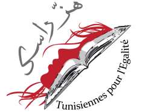

پذيرش > سایت نوشته ها > کمپین زنان تونسی برای تشویق به شرکت در انتخابات


 کمپین زنان تونسی برای تشویق به شرکت در انتخابات کمپین زنان تونسی برای تشویق به شرکت در انتخابات
13 مرداد 1390 - سوده راد - نسخه قابل چاپ
«هزرأسک»- سرت را بالابگیر!- نامی است که ما برای کارزار گسترش حساسیت عمومی برگزیدهایم و اهداف اصلیاش فراخواندن زنان به شرکت فعال در انتخابات، با رأی دادن یا عضویت در احزاب سیاسی و فهرستهایی است که برابری زنان و مردان را یکی از ارزشهای برنامههای عملی و پروژه اجتماعی خود قرار دادهاند. همچنین فراخواندن همه احزاب سیاسی به رعایت برابری در عمل و جای دادن زنان در بالای فهرست انتخاباتی خود برای مجلس موسسان است.»
این بخشی از متن فراخوان کمپین زنان و مردان برابریخواه تونسی است که از اولین دوشنبه مردادماه آغاز بهکار خواهد کرد. پس از پیروزی انقلاب تونس در ژانویه ۲۰۱۱ «هیئت عالی مقام دستیابی به اهداف انقلاب» همزمان با دولت موقت در تونس تشکیل شد تا سازوکار برگزاری انتخابات را سر و سامان دهد. یکی از مواردی که در جلسات این هیئت مورد بررسی و تصمیمگیری قرار گرفت، نحوه برگزاری انتخابات مجلس موسسان بود. پس از گفتوگو و بحث در مورد حضور زنان در این شورا، سرانجام در ۱۲ آوریل ۲۰۱۱، با اکثریت آرا تصمیم گرفته شد سهمیه ۲۴ درصدی زنان، به تساوی شمار زنان و مردان حاضر در فهرستهای انتخاباتی تغییر یابد. این تساوی یکی از پیروزیهای جنبش فمینیستی تونس در متن انقلاب بود که امروز برای تضمین اجرایی شدن آن کمپین «هز رأسک» را به راه انداختهاند.
صنعا بن عاشور، رئیس انجمن تونسی زنان دموکرات که با فمینیستهای فرانسوی ارتباط نزدیکی دارد در گفتوگوها و سخنرانیهای پرشمارش میگوید: «این پیروزی فقط برای تونس نیست بلکه پیروزی در تاریخ بشریت و مردمسالاریست. من به تونسی بودنم بسیار افتخار میکنم؛ اینکه قوانین کشورم که ما سالها برای بهدست آوردنشان تلاش کردهایم، به واقعیت زندگی و شرایط زنان در تونس احترام میگذارند و انعکاسی از جامعه هستند، مایه خشنودی من است.»
پس از تصویب این قانون، راهپیماییهایی از جانب بنیادگرایان اسلامی برگزارشد. بیشتر شعارهای این گروهها با اعلام اینکه زنان «ناموس کشور» هستند، آنها را به داشتن حجاب و خانهداری فرامیخواندند. خانم بن عاشور در این زمینه میگوید: «البته ما چنین رفتار و عکسالعملی را از جانب بنیادگرایان دینی و سنتگرایان پیشبینی میکردیم، ولی تعدد نظرات و عقاید به شرط رعایت اصول مردمسالاری مایه پیشرفت است. مردمسالاری واقعی هم بدون امکان حضور همه اقشار و عقاید و شفافیت تصمیمگیریها امکان ندارد. برابری جنسیتی یکی از اصول فراگیر در جامعهای است که میخواهد خود را مردمسالار معرفی کند و بماند.»
خانم لطیفه الأخضر، نایب رئیس «هیئت عالی مقام دستیابی به اهداف انقلاب» نیز در مصاحبه با سایت اینترنتی تونس نومریک* میگوید: «قانون تساوی شمار نامزدهای زن و مرد در فهرستهای انتخاباتی مکمل قانون احوال شخصیه است. این قانون به زنان تونسی اجازه میدهد در این مرحله گذار و در تعیین سرنوشت خود نقش فعالی داشته باشند.»
او اضافه میکند: «باید تأکید کنم صرف چنین قانونی برابری را تضمین نمیکند و زنان ما باید همچون مردان تونسی باور کنند که مشارکتشان در روند بازسازی سیاسی، اقتصادی و اجتماعی تونس حیاتی است.»
چندی پیش به دلیل نیاز به آمادگی بیشتر برای برگزاری انتخابات و تصمیمگیری بر سر مسایل مختلف، انتخابات تونس از ۲۳ ژوییه به ۲۳ اکتبر عقب رانده شد. یکی از مهمترین عناصری که در برگزاری انتخابات بر آن تأکید میشود، آزادی شرکت احزاب در رقابتها و شفافیت در برگزاری انتخابات و شمارش آرای دریافتی است. هرکسی که دارنده کارت ملی تونس باشد، میتواند در این انتخابات شرکت کند و این شامل تونسیهای مقیم در سایر کشورهای دنیا نیز میشود. در طول تبلیغات پیش از انتخابات، هیچ فرد یا گروه و حزبی حق ندارد از اماکن مذهبی برای تبلیغ یا برگزاری جلسات بحث و گفتوگو در مورد انتخابات استفاده کند. همچنین باید امکان دسترسی آسان مردم و مطبوعات به دفاتر مالی کمپینهای انتخاباتی فراهم باشد.
از سوی دیگر هیچ منبع حقوقی یا حقیقی غیر تونسی حق ندارد کمک مالی به یک نامزد یا حزب کند و کمکهای شخصی هم مشمول محدودیتهایی هستند. همچنین نامزدهای انتخاباتی حق ندارند از مطبوعات و رسانههای خارجی برای تبلیغ بهره ببرند. سازمان ملل متحد نیز اعلام کرده است به زودی تیمی را برای کمک به برگزارکنندگان انتخابات به تونس اعزام میکند تا این انتخابات هرچه بهتر برگزار شود.
یکی از جوانان فعال در کمپین میگوید: «باتوجه به اینکه رأیگیری بر اساس فهرستهای اعلام شده است ما تمام تلاش خود را میکنیم که زنان در صدر فهرست قرار گیرند تا در صورتی که فهرست مورد نظر رأی آورد و یک یا چند صندلی در مجلس را بهدست آورد، یک زن بتواند واقعاً در قانوننویسی شرکت کند.»
پس از انقلاب تونس، حدود ۹۰ حزب سیاسی در این کشور تأسیس شده است و کنشگران کمپین «سرت را بالا بگیر!» هدف خود را مذاکره با احزاب سیاسی پیشروندهای قرار دادهاند که به برابری زن و مرد اعتقاد دارند. آنها میگویند بیتردید پس از پایان انتخابات نقش آنها تغییر و تلاش خواهند کرد برابری جنسیتی در تمام بندهای قانون اساسی رعایت شود.
تونس کنوانسیون رفع هر گونه تبعیض علیه زنان CEDAW را امضا کرده، با این حال موادی را به طور کامل نپذیرفته است. این موارد، در زمینه انتقال تابعیت تونسی از مادر به فرزند، حقوق برابر در ازدواج و طلاق، حقوق برابر برای حضانت فرزندان و تصمیمگیری برای آنها، حق انتخاب شغل و نام خانوادگی پس از ازدواج و حق مالکیت بر اموال و ارث برابر میشود.
در قانون تونس، مردان حق ندارند بیش از یک همسر داشته باشند. برای طلاق نیز یک رویه قضایی تعریف شده است و ازدواج تنها با احراز رضایت زن و مرد امکان دارد. قانون ارث اما همچنان نابرابر است. سیاست برابریخواه زمامداران تونس، به خصوص پس از بالاگرفتن موج اسلامگرایی در دهه ۸۰، با مقاومت و مخالفت محافظهکاران روبهرو بوده است. با توجه به قوانین خانواده، ازدواج زن با مردی غیر تونسی، نه تنها به رسمیت شناخته نمیشود، بلکه نمیتواند ملیت تونسیاش را به فرزندی که خارج از تونس به دنیا بیاید انتقال دهد. از سوی دیگر زنان غیر مسلمان از همسران مسلمانشان ارث نمیبرند و شهروند درجه دو محسوب میشوند.
پینوشت:
*http://www.tunisienumerique.com/2011/04/parite-hommefemme-a-la-constituante/
منبع
ارسال به
بالاترین
،
توییتر
،
فریندفید
،
فیسبوک
در همين بخش :
 یک خبر تلخ؟ یک قانونشکنی؟ یک تصمیم بخشنامهای جدید؟ یک خبر تلخ؟ یک قانونشکنی؟ یک تصمیم بخشنامهای جدید؟
چرا بایست به سکسوالیته پرداخت؟ / نفیسه آزاد
آزارجنسی خانگی؛ «قربانی» نه، «نجات یافته»
زنان، بزرگترین بازندگان بهار عرب
سانسور از دیدگاه جنسیتی/الهه امانی
ديگر بخش ها :
طرح یک میلیون امضا
|
مقالات
|
سایت نوشته ها
|
اخبار
|
گزارش كمپين
|
گفت و گو
|
علیه سکوت
|
كوچه به كوچه
|
نامه های شما
|
گزارش ویژه
|
گفتگو با اعضا
|
ویژه سالگرد کمپین
|
تصویر برابری
|
دل آرام علی
|
تریبون
|
مقالات
|
تاریخ شفاهی
|
خارج از چارچوب
|
کتابخانه
|
درباره کمپین
|
کمپین در شهرها
|
کمپین در بند
|
صدای تغییر
|
ویژه 22 خرداد
|
لایحه حمایت از خانواده
|
گالری
|
عشا مومنی
|
امیر یعقوبعلی
|
خدیجه مقدم
|
راحله عسگری زاده و نسیم خسروی
|
پروین اردلان،جلوه جواهری، مریم حسین خواه، ناهید کشاورز
|
زینب پیغمبرزاده
|
سعیده امین، سارا ایمانیان، محبوبه حسین زاده، ناهید کشاورز و همایون نامی
|
احترام شادفر
|
نسیم سرابندی زاده،فاطمه دهدشتی
|
وبلاگ مهمان
|
پرونده خرم آباد
|
دستگیری ها
|
مریم مالک
|
پرستو اللهیاری
|
مهرنوش اعتمادی
|
سمیه رشیدی
|
Other Languages
|
همراهان
|
«فراخوان کمپین ده روز با بهاره هدایت»
| English
|